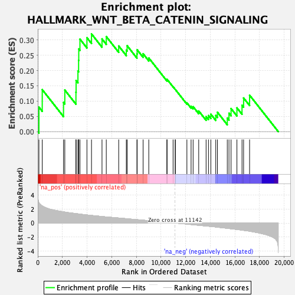

| | | Dataset | CK_basal |
| Phenotype | NoPhenotypeAvailable |
| Upregulated in class | na_pos |
| GeneSet | HALLMARK_WNT_BETA_CATENIN_SIGNALING |
| Enrichment Score (ES) | 0.3202206 |
| Normalized Enrichment Score (NES) | 1.1973413 |
| Nominal p-value | 0.18571429 |
| FDR q-value | 0.31861302 |
| FWER p-Value | 0.998 |
Table: GSEA Results Summary

Fig 1: Enrichment plot: HALLMARK_WNT_BETA_CATENIN_SIGNALING
Profile of the Running ES Score & Positions of GeneSet Members on the Rank Ordered List
| SYMBOL | RANK IN GENE LIST | RANK METRIC SCORE | RUNNING ES | CORE ENRICHMENT | | 1 | DKK1 | 95 | 2.913 | 0.0801 | Yes |
| 2 | HDAC2 | 364 | 2.440 | 0.1376 | Yes |
| 3 | CUL1 | 2092 | 1.602 | 0.0957 | Yes |
| 4 | ADAM17 | 2196 | 1.567 | 0.1362 | Yes |
| 5 | PSEN2 | 3100 | 1.346 | 0.1291 | Yes |
| 6 | AXIN1 | 3112 | 1.343 | 0.1677 | Yes |
| 7 | HEY1 | 3262 | 1.312 | 0.1984 | Yes |
| 8 | TP53 | 3316 | 1.298 | 0.2335 | Yes |
| 9 | SKP2 | 3328 | 1.295 | 0.2708 | Yes |
| 10 | MYC | 3425 | 1.275 | 0.3030 | Yes |
| 11 | TCF7 | 3992 | 1.154 | 0.3077 | Yes |
| 12 | DLL1 | 4363 | 1.081 | 0.3202 | Yes |
| 13 | CTNNB1 | 5216 | 0.932 | 0.3037 | No |
| 14 | WNT1 | 5563 | 0.871 | 0.3114 | No |
| 15 | FZD8 | 6571 | 0.717 | 0.2806 | No |
| 16 | NOTCH1 | 7189 | 0.622 | 0.2671 | No |
| 17 | FRAT1 | 7255 | 0.611 | 0.2816 | No |
| 18 | WNT6 | 8053 | 0.484 | 0.2548 | No |
| 19 | NOTCH4 | 8069 | 0.483 | 0.2681 | No |
| 20 | NCOR2 | 8553 | 0.405 | 0.2551 | No |
| 21 | JAG1 | 9012 | 0.334 | 0.2414 | No |
| 22 | CCND2 | 10488 | 0.106 | 0.1688 | No |
| 23 | LEF1 | 10492 | 0.106 | 0.1717 | No |
| 24 | PPARD | 10986 | 0.024 | 0.1471 | No |
| 25 | DVL2 | 11159 | -0.002 | 0.1383 | No |
| 26 | DKK4 | 11168 | -0.004 | 0.1380 | No |
| 27 | CSNK1E | 12108 | -0.153 | 0.0943 | No |
| 28 | NKD1 | 12447 | -0.213 | 0.0832 | No |
| 29 | HDAC11 | 12612 | -0.240 | 0.0817 | No |
| 30 | KAT2A | 13067 | -0.317 | 0.0677 | No |
| 31 | RBPJ | 13666 | -0.422 | 0.0493 | No |
| 32 | JAG2 | 13858 | -0.453 | 0.0527 | No |
| 33 | PTCH1 | 14050 | -0.486 | 0.0571 | No |
| 34 | HEY2 | 14451 | -0.564 | 0.0531 | No |
| 35 | WNT5B | 14587 | -0.593 | 0.0634 | No |
| 36 | GNAI1 | 15386 | -0.754 | 0.0445 | No |
| 37 | AXIN2 | 15523 | -0.782 | 0.0603 | No |
| 38 | HDAC5 | 15693 | -0.817 | 0.0755 | No |
| 39 | MAML1 | 16169 | -0.918 | 0.0779 | No |
| 40 | NCSTN | 16582 | -1.014 | 0.0864 | No |
| 41 | FZD1 | 16710 | -1.044 | 0.1103 | No |
| 42 | NUMB | 17197 | -1.167 | 0.1194 | No |
Table: GSEA details [plain text format]
Fig 2: HALLMARK_WNT_BETA_CATENIN_SIGNALING: Random ES distribution
Gene set null distribution of ES for HALLMARK_WNT_BETA_CATENIN_SIGNALING